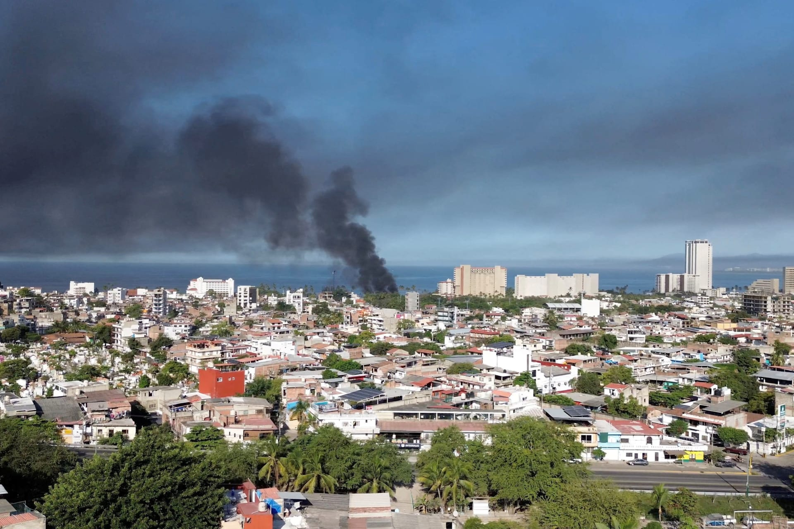

- If Haiti were to become more politically stable, they could improve policing, courts and accountability so gangs cannot operate with impunity.
- Internationally supported security operations can help the Haitian government regain control of important communities and infrastructure.
- Porgrams can provide pathways for people to leave armed groups and return to civilian life, with special protection and rehabilitation for children involved with gangs.
- Education, employment and community programs can reduce the conditions that make young people vulnerable to gang recruitment.
- Food, healthcare, housing and education help people survive the immediate crisis and reduce vulnerability. The UN's 2026 plan aims to assist 4.2 million vulnerable Haitians.
- Long-term stability requires effective institutions, legitimate political leadership and better governance. Security measures alone will not solve the underlying causes.
- Local organisations and community leaders can help rebuild trust, provide services and reduce violence at the community level.
However, people outside of Haiti cannot solve the gang crisis themselves, but they can contribute by supporting legitimate humanitarian and development organisations that provide food, healthcare and support the displaced people.
Center for Preventive Action 2024, Instability in Haiti, Global Conflict Tracker, viewed 23 August 2026, <https://www.cfr.org/global-conflict-tracker/conflict/instability-haiti>.
